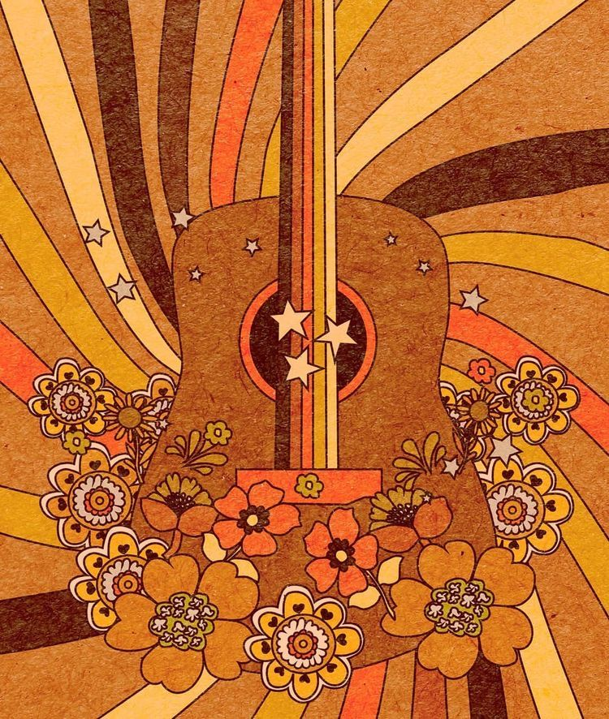
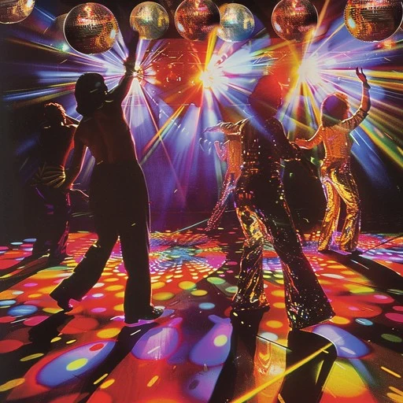

Disco music emerged in the 1970s as a vibrant and energetic genre that quickly became a cultural phenomenon. Characterized by its steady four-on-the-floor beat, catchy basslines, and rich orchestral arrangements, disco was designed to keep people dancing all night long. Originating in nightclubs, especially within marginalized communities, it became a symbol of freedom, expression, and unity. Artists like Donna Summer, the Bee Gees, and Gloria Gaynor helped bring disco into the mainstream, turning it into a global sensation.

Contemporary music refers to modern musical styles that reflect the sounds, technologies, and cultural influences of today’s world.
